Practica 2.2¶
Autenticación en Nginx¶
Paquetes necesarios¶
Tenemos que empezar comprobando que tenemos el paquete para utilizar ssl y crear así contraseñas:
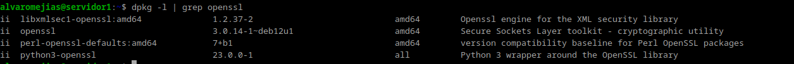
Creación de usuarios y contraseñas¶
Y ahora, creamos los usuarios:
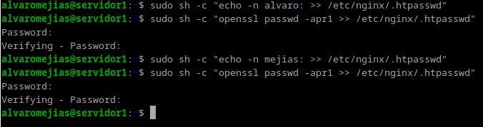
Nota: Es muy importante poner ":" al final del nombre del usuario.
Y con el comando cat /etc/nginx/.htpasswd podemos comprobar que están bien creados:
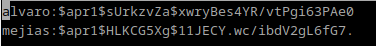
Configurando el servidor¶
Tenemos que editar el archivo /etc/nginx/sites-available/nombredenuestraweb y añadir lo siguiente:
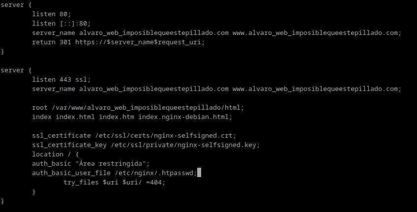
Tras esto, reiniciamos el servicio de nginx:
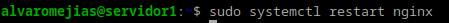
Probando la nueva configuración¶
Para comprobar que todo funciona correctamente, intentamos acceder al sitio web desde nuestra máquina anfitriona:
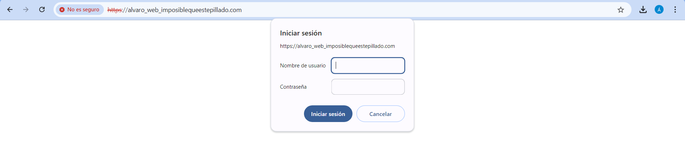
Efectivamente, nos pide autenticarnos, y al hacerlo correctamente nos permite acceder.
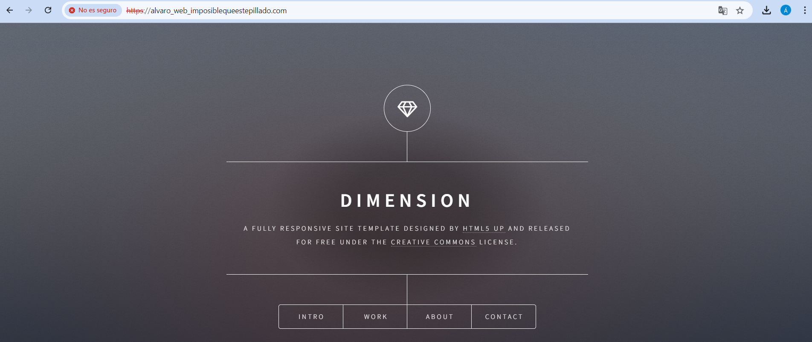
En caso de no autenticarnos correctamente:
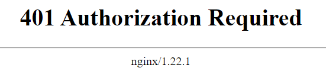
Tareas¶
Intenta entrar primero con un usuario erróneo y luego con otro correcto. Puedes ver todos los sucesos y registros en los logs access.log y error.log.¶
Aquí se adjunta una captura de access.log y otra de error.log:
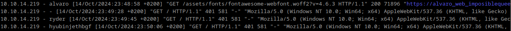

Borra las dos líneas que hacen referencia a la autenticación básica en el location del directorio raíz. Tras ello, añade un nuevo location debajo con la autenticación básica para el archivo/sección contact.html únicamente.¶
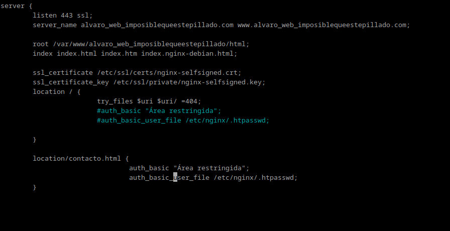
Como se puede ver en la URL, intentando acceder a contacto.html también nos pide autenticación.
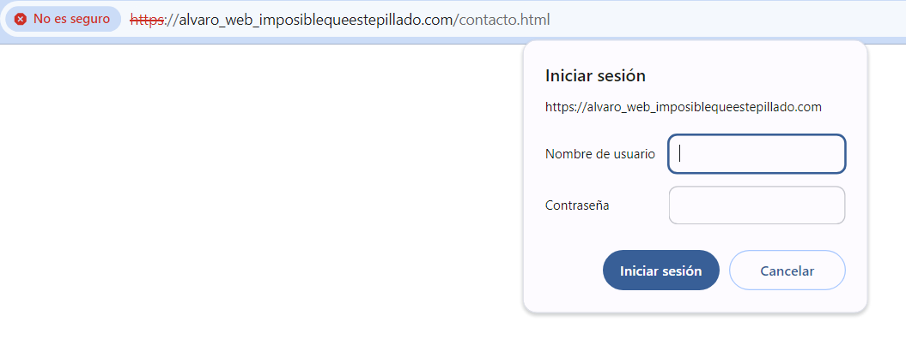
Configura Nginx para que no deje acceder con la IP de la máquina anfitriona al directorio raíz de una de tus dos webs. Modifica su server block o archivo de configuración. Comprueba como se deniega el acceso:¶
Debemos añadir esto al location de sites-available:
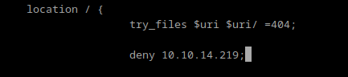
Y como se puede comprobar, nos denegará el acceso desde nuestra máquina anfitriona:
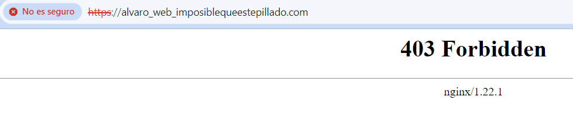
Esto es lo que se ve en el error.log.
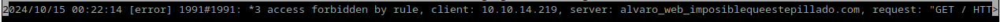
Configura Nginx para que desde tu máquina anfitriona se tenga que tener tanto una IP válida como un usuario válido, ambas cosas a la vez, y comprueba que sí puede acceder sin problemas.¶
Añadimos esto al location de sites-available:
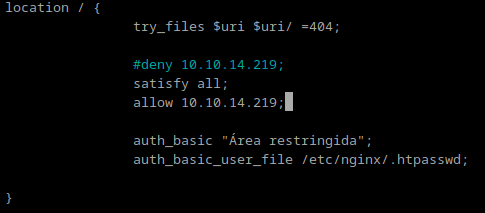
Y ahora nos permite el acceso:
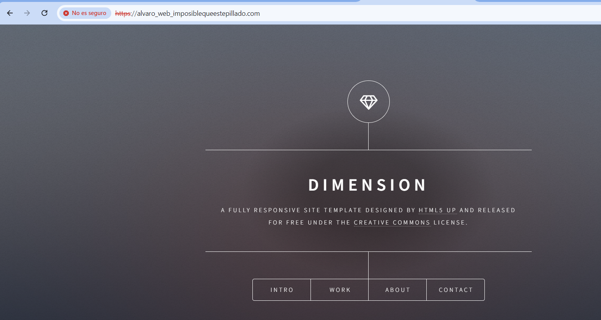
Cuestiones finales¶
Cuestión 1¶
Supongamos que yo soy el cliente con la IP 172.1.10.15 e intento acceder al directorio web_muy_guay de mi sitio web, equivocándome al poner el usuario y contraseña. ¿Podré acceder?¿Por qué?
location /web_muy_guay {
...¶
satisfy all;
deny 172.1.10.6;
allow 172.1.10.15;
allow 172.1.3.14;
deny all;
auth_basic "Cuestión final 1";
auth_basic_user_file conf/htpasswd;
}
Deben estar correctas tanto la IP como la autenticación del usuario, por lo que no, no podrá acceder.
Cuestión 2¶
ask "Cuestión 1" Supongamos que yo soy el cliente con la IP 172.1.10.15 e intento acceder al directorio web_muy_guay de mi sitio web, introduciendo correctamente usuari y contraseña. ¿Podré acceder? ¿Por qué?
location /web_muy_guay {
...¶
satisfy all;
deny all;
deny 172.1.10.6;
allow 172.1.10.15;
allow 172.1.3.14;
auth_basic "Cuestión final 2: The revenge"; auth_basic_user_file conf/htpasswd; }
En este caso sí, pues la IP está permitida y el usuario se ha identificado correctamente. Podrá acceder.
Cuestión 3¶
Supongamos que yo soy el cliente con la IP 172.1.10.15 e intento acceder al directorio web_muy_guay de mi sitio web, introduciendo correctamente usuario y contraseña. ¿Podré acceder? ¿Por qué?
location /web_muy_guay {
...¶
satisfy any;
deny 172.1.10.6;
deny 172.1.10.15;
allow 172.1.3.14;
auth_basic "Cuestión final 3: The final combat"; auth_basic_user_file conf/htpasswd; }
Esta vez no podrá acceder, porque la IP no está permitida.
Cuestión 4¶
A lo mejor no sabéis que tengo una web para documentar todas mis excursiones espaciales con Jeff, es esta: Jeff Bezos y yo
Supongamos que quiero restringir el acceso al directorio de proyectos porque es muy secreto, eso quiere decir añadir autenticación básica a la URL:Proyectos
Completa la configuración para conseguirlo:
server { listen 80; listen [::]:80; root /var/www/freewebsitetemplates.com/preview/space-science; index index.html index.htm index.nginx-debian.html; server_name freewebsitetemplates.com www.freewebsitetemplates.com; location {
try_files $uri $uri/ =404;
}
}
Tendríamos que añadirle un location /Proyectos que quedase tal que así: location {
try_files $uri $uri/ =404;
}
location/Proyectos {
auth_basic "Área restringida (por ejemplo)"
auth_basic_user_file conf/htpasswd
}